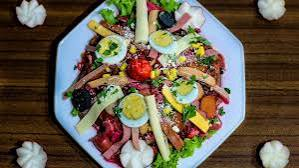

12.Guanajuato

- Platillo: Fiambre estilo San Miguel
- Ingredientes: Carne de res, jamón, frutas, vegetales, vinagre, especias.
- Historia: Se originó como comida fría para celebraciones religiosas y procesiones.
- Dato curioso: Es parecido a una ensalada con carnes frías, se sirve en Día de Muertos.